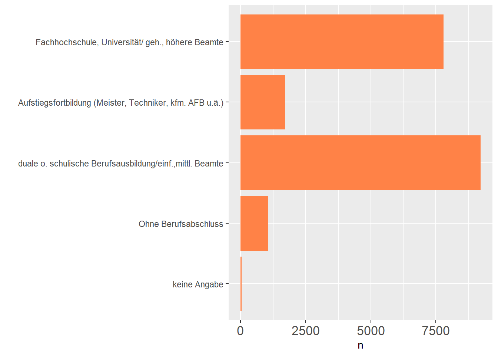
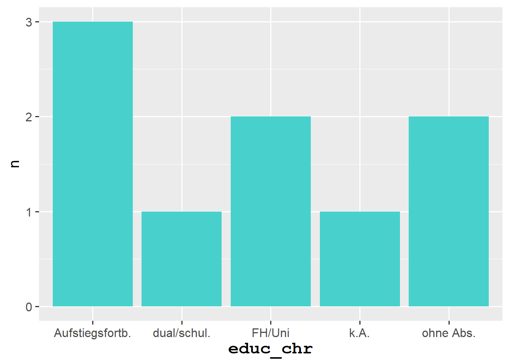
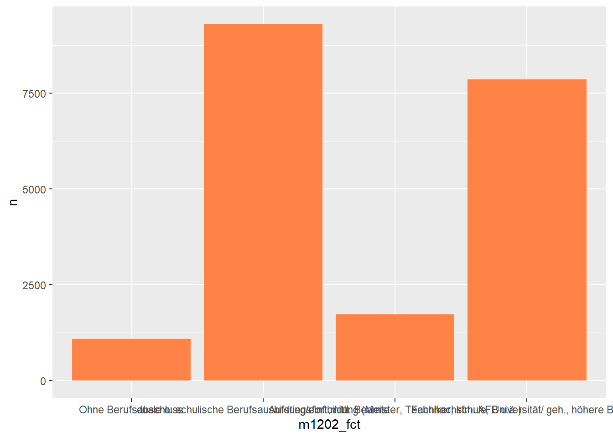
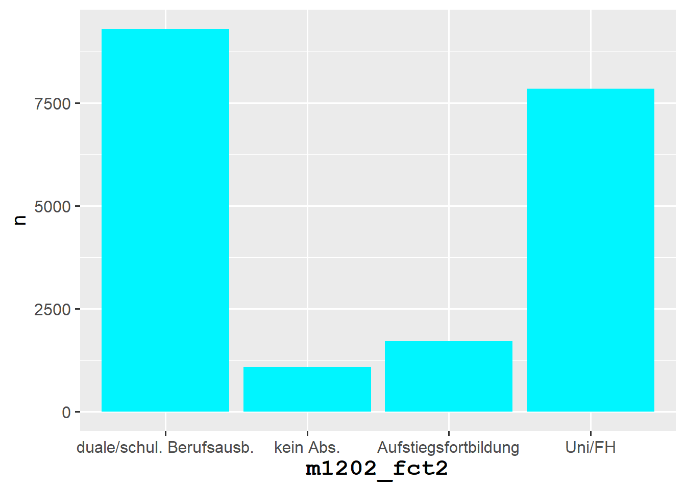
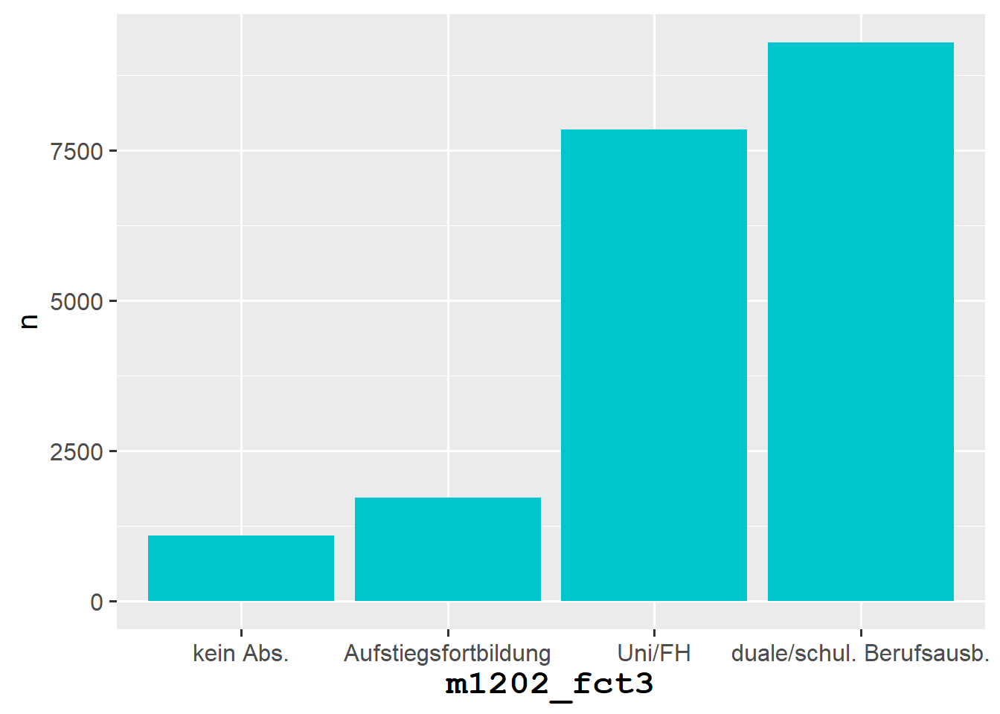

library(tidyverse)
etb18 <- read_dta("./data/BIBBBAuA_2018_suf1.0.dta")
etb18_small <- etb18 %>% slice(20:30) # für Beispiel weiter unten5 Data Wrangling I
5.1 factor und Labels
R verfügt über einen speziellen Variablentypen namens factor, um mit kategorialen Daten umzugehen. factor Variablen sind besonders hilfreich, wenn wir Grafiken erstellen wollen oder statistische Analysen durchführen.
In den beiden vorherigen Kapiteln haben wir schon gesehen, dass Labels in R immer etwas extra Aufwand bedeuten. In Grafiken mussten wir mit breaks = c(1,2), labels = c("Männer", "Frauen") die Labels extra erstellen. Auch in den Auszählungen waren die Labels nur mit count() aufrufbar.
In vielen Programmen wie Stata oder SPSS werden die labels häufig durch die Operationen “mitgeschleift” und dann ausgegeben. Das ist in R nicht der Fall. Stattdesssen können wir mit Hilfe des Variablentyps factor Labels vergeben. Das Vorgehen mag für alle, die schon lange mit Stata oder SPSS gearbeitet haben, etwas ungewöhnlich sein - ist aber in der Praxis sehr hilfreich, wenn man sich den entsprechenden Workflow angewöhnt hat.
factors stellen kategoriale Daten dar. Sie werden als ganze Zahlen in Verbindung mit Bezeichnungen gespeichert und haben dazu eine festgelegte Ordnung. Wir sehen uns factor-Variablen nun etwas genauer an.
Wir beginnen nochmal “ganz von vorne” und zwar mit einem data.frame, der lediglich den Vektor educ enthält. Wenn wir diesen Mini-Datensatz aber auszählen, dann erhalten wir keine Info darüber, was 1-4 bedeuten.
dat1 <- data.frame(educ=c(3, 3, -1, 1, 4, 3, 1, 4, 2))
tab_dat1 <- dat1 %>% count(educ)
tab_dat1 educ n
1 -1 1
2 1 2
3 2 1
4 3 3
5 4 2Dabei soll educ die verschiedenen Ausbildungsniveaus entsprechend der Codierung von m1202 repräsentieren:
Code
library(labelled)
names(val_labels(etb18$m1202)[-1])[1] "Ohne Berufsabschluss"
[2] "duale o. schulische Berufsausbildung/einf.,mittl. Beamte"
[3] "Aufstiegsfortbildung (Meister, Techniker, kfm. AFB u.ä.)"
[4] "Fachhochschule, Universität/ geh., höhere Beamte" Wie können wir diese jetzt hinterlegen? In Kapitel 2 hatten wir einfach einen character-Vektor in Reihenfolge der Werte eingefügt:
dat1$uni <- c("Uni Bremen","Uni Vechta", "Uni Oldenburg")So könnten wir einfach eine educ_chr-Spalte hinzufügen:
tab_dat1$educ_chr <- c("k.A.","ohne Abs.", "dual/schul.", "Aufstiegsfortb.", "FH/Uni")
tab_dat1 educ n educ_chr
1 -1 1 k.A.
2 1 2 ohne Abs.
3 2 1 dual/schul.
4 3 3 Aufstiegsfortb.
5 4 2 FH/UniMit factor() können wir levels und labels angeben - die labels werden dann der Reihenfolge nach den Zahlen aus levels zugewiesen. Außerdem wird aus allen nicht angegebenen levels automatisch NA:
tab_dat1$m1202_fct <- factor(tab_dat1$educ,
levels = c(1,2,3,4),
labels = c("ohne Abs.", "dual/schul.", "Aufstiegsfortb.", "FH/Uni"))
tab_dat1 educ n educ_chr m1202_fct
1 -1 1 k.A. <NA>
2 1 2 ohne Abs. ohne Abs.
3 2 1 dual/schul. dual/schul.
4 3 3 Aufstiegsfortb. Aufstiegsfortb.
5 4 2 FH/Uni FH/UniWarum ist das besser als einfach ein character? Weil eine Reihenfolge festgelegt wird:
levels(tab_dat1$m1202_fct)[1] "ohne Abs." "dual/schul." "Aufstiegsfortb." "FH/Uni" tab_dat1$m1202_fct2 <- factor(tab_dat1$educ, levels = c(4,3,2,1),
labels = c("FH/Uni","Aufstiegsfortb.","dual/schul.", "ohne Abs."))
levels(tab_dat1$m1202_fct2)[1] "FH/Uni" "Aufstiegsfortb." "dual/schul." "ohne Abs." tab_dat1 educ n educ_chr m1202_fct m1202_fct2
1 -1 1 k.A. <NA> <NA>
2 1 2 ohne Abs. ohne Abs. ohne Abs.
3 2 1 dual/schul. dual/schul. dual/schul.
4 3 3 Aufstiegsfortb. Aufstiegsfortb. Aufstiegsfortb.
5 4 2 FH/Uni FH/Uni FH/UniWenn wir dann tab_dat1 in einen ggplot pipen, dann werden die Werte der Reihenfolge der levels entsprechend auf der x-Achse sortiert:
tab_dat1 %>%
ggplot(data = ., aes(x = m1202_fct, y = n)) +
geom_col(position=position_dodge(), fill = "steelblue4")
tab_dat1 %>%
ggplot(data = ., aes(x = educ_chr, y = n)) +
geom_col(position=position_dodge(), fill = "mediumturquoise")

5.1.1 as_factor() in {labelled}
In {labelled} findet sich die Funktion as_factor1, mit der wir aus Labels einen factor erstellen können.
library(labelled)
tab_ausb <- etb18 %>% filter(m1202 != -1) %>% count(m1202)
tab_ausb# A tibble: 4 × 2
m1202 n
<dbl+lbl> <int>
1 1 [Ohne Berufsabschluss] 1091
2 2 [duale o. schulische Berufsausbildung/einf.,mittl. Beamte] 9297
3 3 [Aufstiegsfortbildung (Meister, Techniker, kfm. AFB u.ä.)] 1725
4 4 [Fachhochschule, Universität/ geh., höhere Beamte] 7854tab_ausb$m1202_fct <- as_factor(tab_ausb$m1202)
tab_ausb$m1202 <- as.numeric(tab_ausb$m1202) # labels aus m1202 löschen (numeric ist nicht gelabelt)
tab_ausb# A tibble: 4 × 3
m1202 n m1202_fct
<dbl> <int> <fct>
1 1 1091 Ohne Berufsabschluss
2 2 9297 duale o. schulische Berufsausbildung/einf.,mittl. Beamte
3 3 1725 Aufstiegsfortbildung (Meister, Techniker, kfm. AFB u.ä.)
4 4 7854 Fachhochschule, Universität/ geh., höhere Beamte Das können wir dann in den Plot pipen:
tab_ausb %>%
ggplot(data = ., aes(x = m1202_fct, y = n)) +
geom_col(position=position_dodge(), fill = "sienna1")
5.1.2 factor Variablen bearbeiten mit {forcats}
Warum können wir nicht einfach die Angaben in m1202_fct mit kürzeren Labels überschreiben? factor-Variablen haben einen vordefinierten Werteraum. Wenn wir einen Wert durch einen anderen Wert ersetzen möchten, bekommen wir ein Warning und müssen feststellen, das jetzt ein NA in der bearbeiteten Zeile steht:
tab_ausb# A tibble: 4 × 3
m1202 n m1202_fct
<dbl> <int> <fct>
1 1 1091 Ohne Berufsabschluss
2 2 9297 duale o. schulische Berufsausbildung/einf.,mittl. Beamte
3 3 1725 Aufstiegsfortbildung (Meister, Techniker, kfm. AFB u.ä.)
4 4 7854 Fachhochschule, Universität/ geh., höhere Beamte tab_ausb$m1202_fct[2] <- "duale/schul. Berufsausb."Warning in `[<-.factor`(`*tmp*`, 2, value = structure(c(2L, NA, 4L, 5L), levels
= c("keine Angabe", : ungültiges Faktorniveau, NA erzeugttab_ausb# A tibble: 4 × 3
m1202 n m1202_fct
<dbl> <int> <fct>
1 1 1091 Ohne Berufsabschluss
2 2 9297 <NA>
3 3 1725 Aufstiegsfortbildung (Meister, Techniker, kfm. AFB u.ä.)
4 4 7854 Fachhochschule, Universität/ geh., höhere Beamte Wenn wir ein neues level hinzufügen möchten, muss das im factor hinterlegt werden. Eine sehr große Hilfe für solche Operationen ist {forcats} aus dem {tidyverse}.
library(forcats) ## nicht nötig wenn bereits tidyverse geladen
levels(tab_ausb$m1202_fct)[1] "keine Angabe"
[2] "Ohne Berufsabschluss"
[3] "duale o. schulische Berufsausbildung/einf.,mittl. Beamte"
[4] "Aufstiegsfortbildung (Meister, Techniker, kfm. AFB u.ä.)"
[5] "Fachhochschule, Universität/ geh., höhere Beamte" tab_ausb$m1202_fct <- fct_expand(tab_ausb$m1202_fct,"duale/schul. Berufsausb.") # neues level hinzufügen
levels(tab_ausb$m1202_fct)[1] "keine Angabe"
[2] "Ohne Berufsabschluss"
[3] "duale o. schulische Berufsausbildung/einf.,mittl. Beamte"
[4] "Aufstiegsfortbildung (Meister, Techniker, kfm. AFB u.ä.)"
[5] "Fachhochschule, Universität/ geh., höhere Beamte"
[6] "duale/schul. Berufsausb." tab_ausb$m1202_fct <- fct_relevel(tab_ausb$m1202_fct,"duale/schul. Berufsausb.",after = 1)
levels(tab_ausb$m1202_fct)[1] "keine Angabe"
[2] "duale/schul. Berufsausb."
[3] "Ohne Berufsabschluss"
[4] "duale o. schulische Berufsausbildung/einf.,mittl. Beamte"
[5] "Aufstiegsfortbildung (Meister, Techniker, kfm. AFB u.ä.)"
[6] "Fachhochschule, Universität/ geh., höhere Beamte" Jetzt können wir “duale/schul. Berufsausb.” hinzufügen:
tab_ausb# A tibble: 4 × 3
m1202 n m1202_fct
<dbl> <int> <fct>
1 1 1091 Ohne Berufsabschluss
2 2 9297 <NA>
3 3 1725 Aufstiegsfortbildung (Meister, Techniker, kfm. AFB u.ä.)
4 4 7854 Fachhochschule, Universität/ geh., höhere Beamte tab_ausb$m1202_fct[2] <- "duale/schul. Berufsausb."
tab_ausb# A tibble: 4 × 3
m1202 n m1202_fct
<dbl> <int> <fct>
1 1 1091 Ohne Berufsabschluss
2 2 9297 duale/schul. Berufsausb.
3 3 1725 Aufstiegsfortbildung (Meister, Techniker, kfm. AFB u.ä.)
4 4 7854 Fachhochschule, Universität/ geh., höhere Beamte Weitere hilfreiche Funktionen zur Veränderung der Reihenfolge von factor-Variablen:
Mit fct_recode() können wir die levels verändern:
tab_ausb$m1202_fct2 <- fct_recode(tab_ausb$m1202_fct,
Aufstiegsfortbildung = "Aufstiegsfortbildung (Meister, Techniker, kfm. AFB u.ä.)",
"Uni/FH" = "Fachhochschule, Universität/ geh., höhere Beamte",
`kein Abs.` = "Ohne Berufsabschluss" # bei Leerzeichen `` um die Wörter
)
tab_ausb# A tibble: 4 × 4
m1202 n m1202_fct m1202_f…¹
<dbl> <int> <fct> <fct>
1 1 1091 Ohne Berufsabschluss kein Abs.
2 2 9297 duale/schul. Berufsausb. duale/sc…
3 3 1725 Aufstiegsfortbildung (Meister, Techniker, kfm. AFB u.ä.) Aufstieg…
4 4 7854 Fachhochschule, Universität/ geh., höhere Beamte Uni/FH
# … with abbreviated variable name ¹m1202_fct2Mit fct_reorder() können wir die levels nach Häufigkeit (aus tab_ausb$n) sortieren:
tab_ausb$m1202_fct3 <- fct_reorder(tab_ausb$m1202_fct2,tab_ausb$n)
levels(tab_ausb$m1202_fct2)[1] "keine Angabe"
[2] "duale/schul. Berufsausb."
[3] "kein Abs."
[4] "duale o. schulische Berufsausbildung/einf.,mittl. Beamte"
[5] "Aufstiegsfortbildung"
[6] "Uni/FH" levels(tab_ausb$m1202_fct3)[1] "kein Abs."
[2] "Aufstiegsfortbildung"
[3] "Uni/FH"
[4] "duale/schul. Berufsausb."
[5] "keine Angabe"
[6] "duale o. schulische Berufsausbildung/einf.,mittl. Beamte"tab_ausb %>%
ggplot(data = ., aes(x = m1202_fct2, y = n)) +
geom_col(position=position_dodge(), fill = "turquoise1")
tab_ausb %>%
ggplot(data = ., aes(x = m1202_fct3, y = n)) +
geom_col(position=position_dodge(), fill = "turquoise3")

Es gibt noch sehr viele weitere Funktionen in {forcats}, einen Überblick gibt bspw. das Cheatsheet.
5.2 Labels selbst erstellen und ranspielen
Wir können Ein alternativer Weg ist, geht über left_join() und
tab_ausb2 <- etb18 %>% count(m1202)
tab_ausb2# A tibble: 5 × 2
m1202 n
<dbl+lbl> <int>
1 -1 [keine Angabe] 45
2 1 [Ohne Berufsabschluss] 1091
3 2 [duale o. schulische Berufsausbildung/einf.,mittl. Beamte] 9297
4 3 [Aufstiegsfortbildung (Meister, Techniker, kfm. AFB u.ä.)] 1725
5 4 [Fachhochschule, Universität/ geh., höhere Beamte] 7854lab_df <- data.frame(m1202=1:4)
lab_df m1202
1 1
2 2
3 3
4 4lab_df$m1202_lab <- factor(lab_df$m1202,levels = 1:4,
labels = c("ohne Abs.", "dual/schul.", "Aufstiegsfortb.", "FH/Uni"))
lab_df m1202 m1202_lab
1 1 ohne Abs.
2 2 dual/schul.
3 3 Aufstiegsfortb.
4 4 FH/Unitab_ausb2 %>%
left_join(lab_df,by = "m1202") %>%
ggplot(data = ., aes(x = m1202_lab, y = n)) +
geom_col(position=position_dodge(), fill = "turquoise3")
5.3 Übung
- Bearbeiten Sie die labels ihrer Diagramme aus dem vorherigen Kapitel.
- Erstellen Sie dafür zunächst einen
data.framemit den Auszählungen und legen diese als Objekt ab. - Nutzen Sie
as_factor()aus{labelled}, um die Labels in eine separate Variable abzulegen. - Verändern Sie die labels nach Ihrem Geschmack: kürzen Sie, ändern Sie Bezeichungen mit
fct_recode() - Erstellen Sie einen Data-Frame mit Labels und verwenden Sie diesen für ihre Grafik.
Nicht zu verwechseln mit
as.factor()aus base R - der_macht einen Unterschied!↩︎